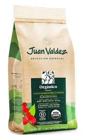

Nuevo


Municipio de Sucre, Cauca
Bienvenido a la plataforma oficial de emprendimiento del Municipio de Sucre, Cauca. Aquí encontrarás productos locales hechos con dedicación por nuestros emprendedores.
¡Llega el momento de armar el equipo y jugar con el corazón! 💚⚽ Los Juegos Campesinos Sucre, Cauca 2025 están en marcha y tú puedes ser parte de esta historia llena de pasión, esfuerzo y trabajo en equipo.
Desde la Alcaldía de Sucre, Cauca y la E.S.E. Sur Occidente, informamos a la comunidad sobre el virus Coxsackie, causante de la enfermedad “mano, pie y boca”, muy común en menores de edad.
📌 Aunque no es grave, se contagia fácilmente a través del contacto con saliva...
🚨 Síntomas a tener en cuenta:
🔹 Fiebre
🔹 Dolor de garganta
🔹 Sarpullido o ampollas en manos, pies y boca
🔹 Cansancio o malestar general
✅ ¿Cómo prevenirlo?
✔️ Lavado constante de manos
✔️ No compartir objetos personales
✔️ Limpieza de juguetes y superficies
✔️ Evitar el contacto con personas enfermas
✔️ Si hay síntomas, no enviar a los niños a la escuela o guardería
👩🏽⚕️ Si tu hijo presenta estos síntomas:
➡️ ¡Acude al centro de salud más cercano!
❌ No te automediques
✅ Refuerza la higiene en casa y en el campo
👨👩👧👦 La salud es responsabilidad de todos.
¡Prevenir está en nuestras manos! 🧼